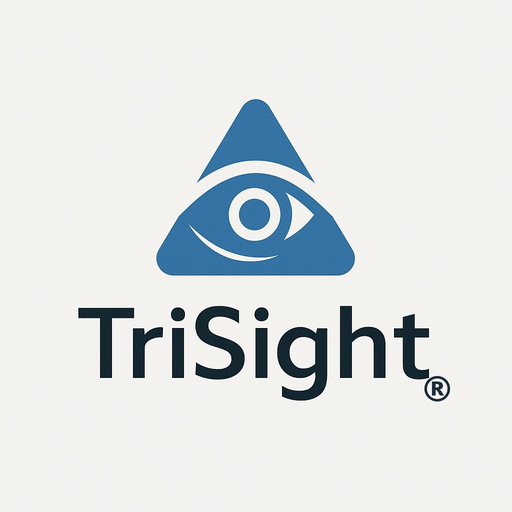

週間予定をもとに、その週の訪問を日ごとに並べます。キャンセルが入った訪問には印が付き、「空いた時間の案」を開くと代わりの案が出ます。
連絡事項・会議の案内・申し送りを、全員・部署ごと・一人ひとりあてに出せます。宛先の人の端末には知らせが出て、読んだかどうかがここで分かります。会議の案内は、その日の予定にも並びます。
トライタスクの案件一覧で「トライタイムに載せる」を押した案件だけを、期限の近い順に並べます。事務局の仕事なので、各部署の訪問やモニタリングの予定には入れません。
電話を受けたら、マイクを押して内容を話してください。AIが欄に下書きし、色の付いた欄を確かめてから「この内容で記録する」を押します。手で入力しても構いません。
患者さんごとに、キャンセル・次回の約束・主治医への確認・拒否の申し出を、日付の順に一本の線で持ちます。良い悪いの評価はせず、事実だけを並べます。
指示書が届いたとき・更新されたときに、主治医から聞いたことを言葉のまま残します。
患者さん本人が言ったことだけを記録します。記録した拒否だけが、予定の案を出すときの条件になります。
選んだ月のキャンセルを、事実と患者さんの言葉だけで並べた下書きを作ります。訪問看護報告書の該当欄へ写して使います。
患者さんごとの回数と、先月から変わった点を出します。売上への影響は「名簿・設定」に単価を入れたときだけ計算します。
代わりの案を、記録された拒否が無いのに断った件です。誰がいつ断ったかを事実として並べます。
氏名は入れず、契約書番号で扱います。地区は町名まで、指示書の日付は最新の指示書の日付です。
職員は、トライシート（基本情報シート）の会社カード「人員」の「職員名簿」に入れたものを読み込みます。会社の基本情報と同じ名簿を使うので、二か所で入れ直す必要はありません。ここで足したり直したりした職員も、この端末のトライシートの名簿へ書き戻します。
毎週決まっている訪問を1件ずつ入れます。
エクセル等の週間スケジュール表で、見出しの行から最後の行までを選んで写し、下の枠に貼り付けてから「読み取る」を押します。どの列が何かを選んで「取り込む」を押すと、名簿にない職員・患者さんも一緒に登録します。
事務局のパソコンと看護師さんの端末で、同じ記録を見るための設定です。この端末を主に使う人を選ぶと、その人が担当する訪問にキャンセルが入ったとき、画面の上に知らせが出ます。
この端末の記録を1つのファイルに書き出したり、書き出したファイルを読み込んだりします。読み込むと、この端末の記録は読み込んだ内容に置き換わります。